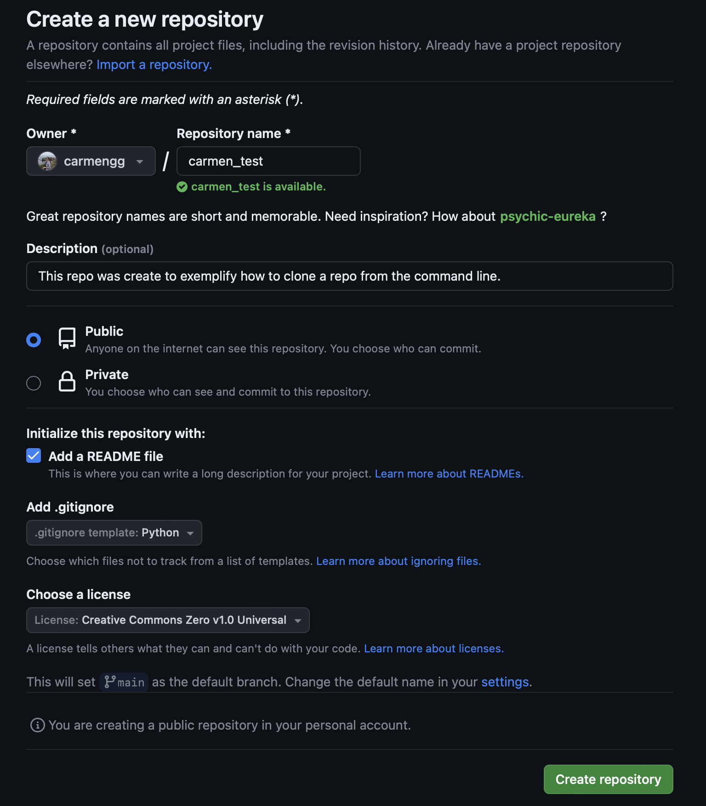
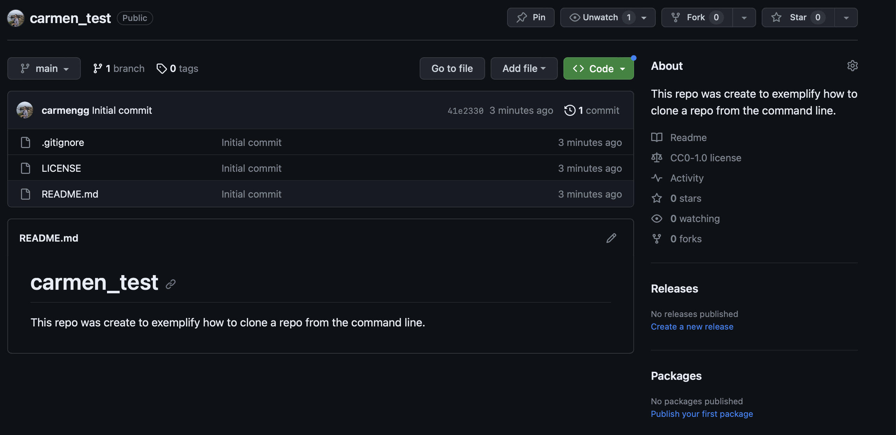
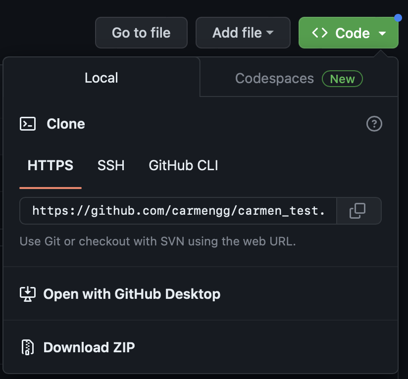
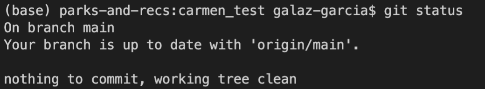
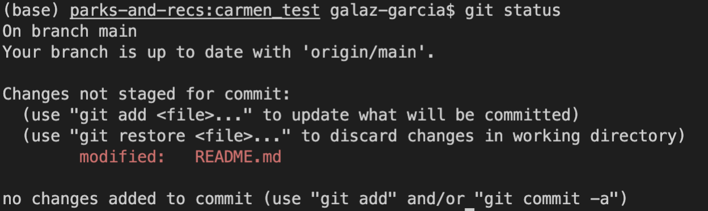
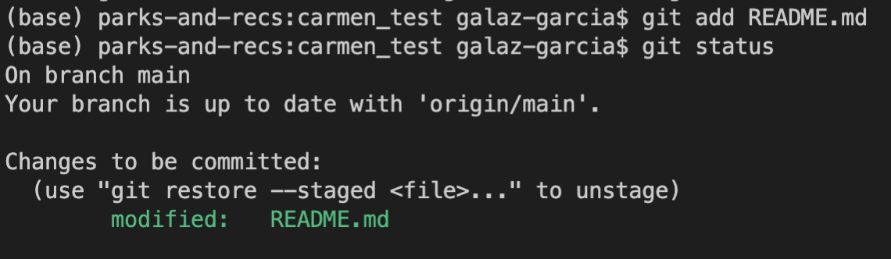
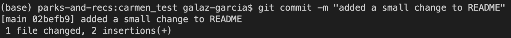
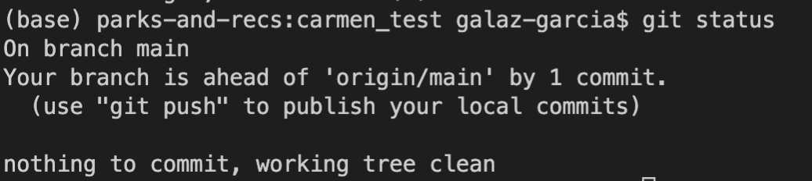
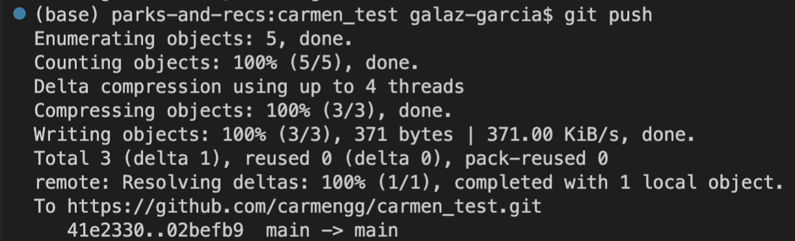
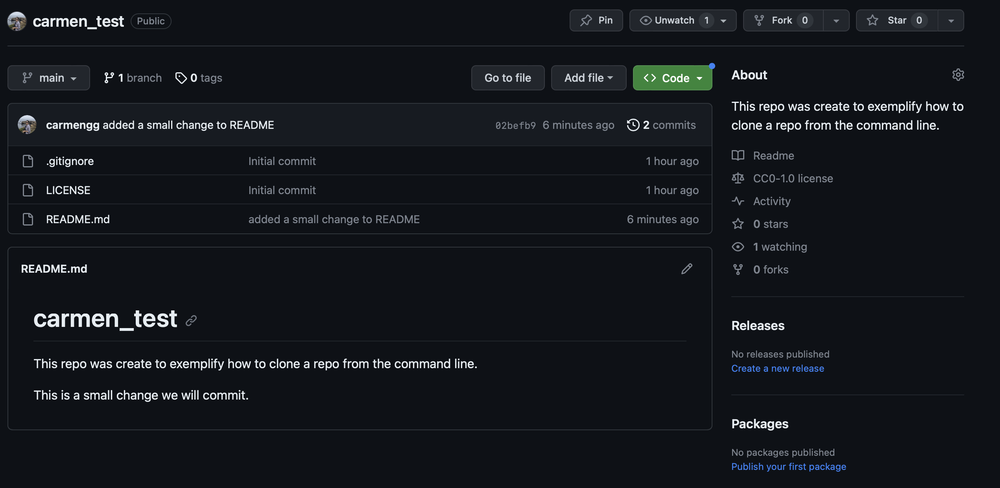

Lab I: Command Line Git
TO DO:
- Update terminal output from output at the server?
- Check with Kat and Brad whether we need to set up credentials expiration
- Run the code in server
About
This is a tutorial about basic Git usage from the terminal for the Bren EDS 220 course.
What is the terminal?
The terminal (also known as command prompt, command shell, or command line) is a way to interact directly with your computer using text instead of clicking around windows.
It can be a bit daunting to start using the terminal. But with practice we’ll see that it can be very efficient for many tasks. In this course, we will use the terminal to interact with the version control system Git.
Basic terminal commands
Resets
Clean the terminal: Ctrl + L
Sometimes the terminal becomes a mess with too many commands and outputs:
The default interactive shell is now zsh.
To update your account to use zsh, please run `chsh -s /bin/zsh`.
For more details, please visit https://support.apple.com/kb/HT208050.
(base) high-castle:eds_220_preparation galaz-garcia$ pwd
/Users/galaz-garcia/Documents/eds_220_preparation
(base) high-castle:eds_220_preparation galaz-garcia$ ls
Lab_1_command_line_git.html Lesson_1_Python_Intro.ipynb
Lab_1_command_line_git.qmd Lesson_2_Python_Intro.ipynb
Lab_1_command_line_git_files cat_class.png
(base) high-castle:eds_220_preparation galaz-garcia$ ls -a
. Lab_1_command_line_git.qmd
.. Lab_1_command_line_git_files
.git Lesson_1_Python_Intro.ipynb
.gitignore Lesson_2_Python_Intro.ipynb
Lab_1_command_line_git.html cat_class.png
(base) high-castle:eds_220_preparation galaz-garcia$ cs
bash: cs: command not found
(base) high-castle:eds_220_preparation galaz-garcia$ cd
(base) high-castle:~ galaz-garcia$ ls
Applications Documents Library Music Public Zotero netcdf_temp_data.csv
Desktop Downloads Movies Pictures Sites iCloud Drive (Archive) opt
(base) high-castle:~ galaz-garcia$ cd Documents/
(base) high-castle:Documents galaz-garcia$ ls
2018_Book_MachineLearningForEcologyAndSu.pdfPressing Ctr+L or Command + L will clear the screen:
After Ctr+L:
(base) high-castle:~ galaz-garcia$ Much better 😌.
Abort! Ctrl + C
Pressing Ctrl+C will stop whatever command is running. When there’s nothing running we can use it to get a new line.
Why git through the terminal?
You have had some practice using git for version control in RStudio. RStudio has a GUI (Graphical User Interface) that lets you interact with git. The Jupyter Lab environment does not have such an interface. Instead, we need to use the terminal to interact with git. That’s ok! Once you get the hang of it you’ll see it is quite practical. The rest of this tutorial will guide you through the basics of using git through the command line.
Setup
Confirm git is installed
First things first: check that git is installed by running git --version. If it is installed you will get as an output git version X.Y.Z.
(base) high-castle:eds_220_preparation galaz-garcia$ git --version
git version 2.33.1Setting up git crendentials
To start using git we need to tell the computer who we are. To do this we must set our username and email.
First, type the following command with your exact GitHub username:
git config --global user.name "your_username"Next, use the following command with the email address you used to create your GitHub account:
git config --global user.email "my_email@bren.ucsb.edu"There will be no output in the terminal if these commands ran successfully. To check it worked we can run
git config --global --listYour output should look something like this:
(base) parks-and-recs:eds_220_preparation galaz-garcia$ git config --global --list
user.name=carmengg
user.email=galaz-garcia@nceas.ucsb.eduThese credentials will keep track of autorship and also connect us to GitHub.
Changing main branch name
We will change one more global option. By running the following command we change the default branch name to main for any new repositories.
git config --global init.defaultBranch mainPreviously, the default branch name in git was master which has racist associations. Around 2020 GitHub pushed for renaming the defualt branch to main.
Cloning a repository
1. Create a GitHub repository
Follow these steps to make a GitHub repository:
Your form should look similar to this one: 
Then click on “Create repository” to make the repo! This will take us to our repo’s main page. We can see it has a README.md file and a .gitignore file.

2. Clone the new repo
We’ll use your GitHub repository’s URL to clone the repository onto the server.
There’s nothign particular about the server and we would follow these steps to clone the repository to any computer where git is installed.
To get the repo’s URL click on the green “<> Code” button, then copy the URL.

Now back at the terminal, first make sure your working directory is the eds-220 folder. Then go to the terminal and run the git clone command followed by the repo’s URL. For me this looks like:
git clone https://github.com/carmengg/carmen_test.gitGit will automatically create a directory with the repository name and will donwload the files there. Let’s finish by navigating into our new repository and listing the files:
cd carmen_test
lsgit pull
To fetch changes from the remote repository (our repository’s copy in GitHub) we run git pull. This command will automatically try to merge the current branch with the upstream. We just cloned the repo and there are no changes to pull now, but it’s a good habit to pull before making any local changes.
git status
git status is a fundamental git command. We use it to display the information about the git status of each of the files in the current working directory. It will show us which files have been modified, which are staged, and which are not tracket by git. You can think of git status as the equivalent of taking a look at the git tab in RStudio.
Run git status on your new repository, the output should be similar to this:

Basically, it is telling us there have been no changes to any files (nothing to commig) and there are no updates in the origin repository (your branch is up to date).
Add, commit, and push
Let’s open the README.md file and make a small change. After we make a change and save the document we can run git status again, this will show us the file has been modified:

git add
Now we need to add the file to the staging area. We do this by writing git add [FILENAME]. If it works there will be no output in the terminal. We can see this file is now in the staging area by running git status:

git commit
We will always commit with a message. To do this we use git commit -m "A COMMIT MESSAGE". The commit message must be between quotes.

If we run git status we will see there’s a record of our commit where it says “branch ahead of origin/main by 1 commit”:

git push
When we are ready to push our changes to the origin repository (the copy of our repository in GitHub) we simply use the git push command:

If we run git status again we will see we are back to no changes seen by git:
Back in GitHub we can see the changes we made to the README file and also that we have a second commit:

Exercise
Create a new jupyter notebook in your trial repository and use the command line to push it to your remote repo.